Chapter 10
Radar recognition of multiple UAVs
1Department of Electronic Engineering, Tsinghua University, Beijing, China
10.1 Introduction
Radar detection and recognition of small unmanned aerial vehicle (UAV) have attracted significant attention, as a misuse of UAVs has led to a series of illegal events such as filming of restricted areas, disruption of public events and even transport of illicit materials [1]. It has been demonstrated that radar micro-Doppler signatures (MDSs) are helpful for the detection and recognition of small UAVs [2–8]. Especially when the radar bandwidth is limited, it is difficult to find the small UAVs from the radar images with poor resolutions. In this case, the micro-Doppler analysis provides a reliable solution for small UAV recognition. In [2], the feasibility of distinguishing between loaded and unloaded small UAVs based on MDS observed by the multistatic radar system is investigated. In [3,4], three kinds of small UAVs are classified by using a dual-band radar system and exploiting the multipath components, respectively. In [5], empirical mode decomposition is applied to extract features for small UAV classification. The problem of small UAV detection is investigated in [6] from the perspective of their extremely low radar cross section (RCS). More studies on detection and classification based on micro-Doppler analysis are summarised in [7]. Most of existing studies on the radar classification of small UAVs assume that the radar signal is reflected from a single UAV. However, in recent years, the civilian and military applications for UAV swarms keep growing [9,10]. When there are multiple UAVs in the observed scene, the recognition of multiple UAVs becomes more complicated because of the superimposition of a number of micro-Doppler components. In particular, it is challenging to determine if a specific kind of target exists when there are multiple targets in the observed scene. The spatial separation of multiple targets is partially solved if the radar range resolution is high enough, but this requires large bandwidths that also increases the hardware cost. For radar systems with lower range resolution and azimuth resolution, there may exist multiple UAVs in a single range-azimuth resolution cell. Under this situation, it is necessary to investigate how to detect and classify multiple UAVs from their MDSs.
In this chapter, we present two algorithms for radar recognition of multiple UAVs. In the first algorithm, the cadence frequency spectrum (CFS) is presented as a kind of low-dimensional feature of small UAVs [11]. The CFS of each class of small UAVs is obtained by accumulating cadence-velocity diagram (CVD) over the Doppler frequency axis. Experimental results on measured data have demonstrated that the combination of CFS and the K-means classifier is capable of providing a satisfactory accuracy of recognition of multiple UAVs. The second algorithm is based on dictionary learning [12]. The dictionary is learnt by performing the K-SVD algorithm on the CVDs of training samples from each class of small UAVs. Then, the learnt dictionaries of all the classes are combined together to generate a recognition dictionary. In this way, the problem of recognition of multiple UAVs is converted to a problem of signal decomposition. Subsequently, the sparse representation of the CVD from multiple UAVs is solved by the orthogonal matching pursuit (OMP) with the learnt recognition dictionary and recognition result is obtained by evaluating the magnitudes of the sparse representation coefficients. Experimental results on measured radar data have demonstrated the effectiveness of the dictionary learning-based algorithm for the recognition of multiple UAVs and the superiority of the dictionary learnt from CVD over that learnt from a time–frequency spectrogram. It is worth emphasizing that the training data sets used in these two algorithms only consist of radar echoes reflected from every single class of small UAVs.
10.2 Recognition of multiple UAVs based on CFS
In this section, an algorithm of the recognition of multiple small UAVs based on the CFS features is presented.
10.2.1 Signal model
Assume that there are C different classes in total and
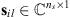
is the lth training signal collected from the ith target class and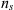
is the number of samples in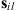
, for i = 1, 2, …, C, l = 1, 2, …,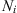
is the number of training signals in the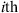
target class. The time–frequency spectrogram, denoted by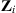
, is obtained by performing STFT on the radar echo: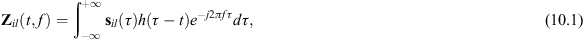
where t is the sample instant,  is the Doppler frequency, and
is the Doppler frequency, and
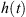
is the window function. The repetition frequency of the time–frequency spectrogram describes the periodic characteristics of the micro-motions of the small UAVs, which can be visualised via CVD. The CVD, denoted by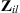
, i.e.,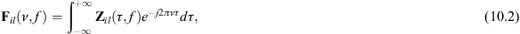
where
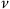
is the cadence frequency.In what follows, a visualised example on the time–frequency spectrogram and CVD is provided. The small UAVs to be recognised, including a helicopter, a quadcopter and a hexacopter with almost the same size, are shown in Figure 10.1. A single-channel continuous wave radar system is used for collecting the data reflected from the flying UAVs. The carrier frequency of the radar is 25 GHz and the sampling frequency is 8 kHz. The details about the radar system and experimental settings are shown in Table 10.1. The spectrograms of the radar data reflected from these three small UAVs are shown in Figure 10.2, which are obtained by performing STFT on the received signals as expressed in (10.1). As suggested in [13], the translational motions of the UAVs have been compensated, which turns the central Doppler frequency in Figure 10.2 to zero. Further, the CVDs of these three small UAVs are presented in Figure 10.3, which are obtained according to (10.2). From the comparison between Figures 10.2 and 10.3, one can see that the CVD gives a measure on how often each Doppler frequency component repeats. Moreover, it is evident that the CVD is independent of the time shift of the radar echo, which may make the recognition of small UAVs more robust.
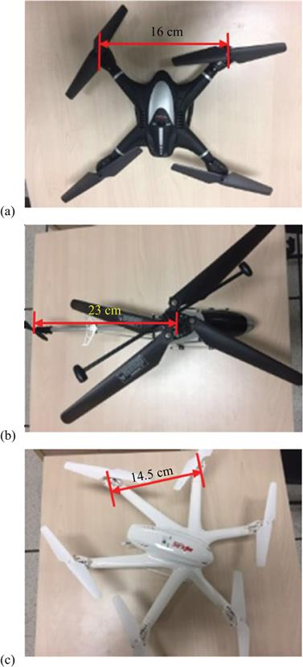
Figure 10.1 Appearance of the UAVs: (a) quadcopter, (b) helicopter and (c) hexacopter
Table 10.1 Experimental settings
| Experimental settings | Details |
|---|---|
| Radar | Ancortek SDR-KIT 2500B |
| Waveforms | Continuous wave |
| Carrier frequency | 25 GHz |
| Sweep time | 0.5 ms |
| Number of samplers per sweep | 512 |
| Sampling frequency | 8 kHz |
| Range | 8 m |
| Room size | 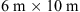 |
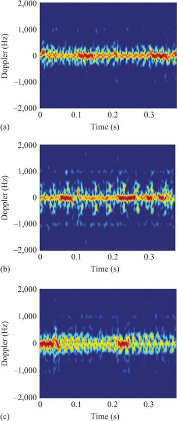
Figure 10.2 The time–frequency spectrograms of the small UAVs: (a) quadcopter, (b) helicopter and (c) hexacopter
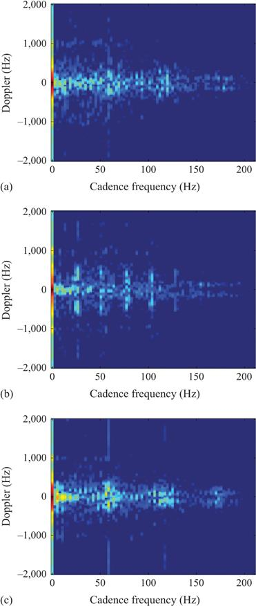
Figure 10.3 The CVDs of the small UAVs: (a) quadcopter, (b) helicopter and (c) hexacopter
The CFS, which is defined as the sum of all the rows of the two-dimensional CVD, can be regarded as a compressed expression of the CVD. The CFSs of the three kinds of UAVs are shown in Figure 10.4, in which the positions of the first peaks in nonzero cadence-frequency areas represent the repetition frequencies of the corresponding time–frequency spectrograms. One can see that the peak amplitudes and peak positions of these CFSs are significantly different due to the diverse numbers of blades and RCSs of the three kinds of UAVs. In comparison with CVD, the CFS decreases the dimension of the features and therefore makes the computation easier.
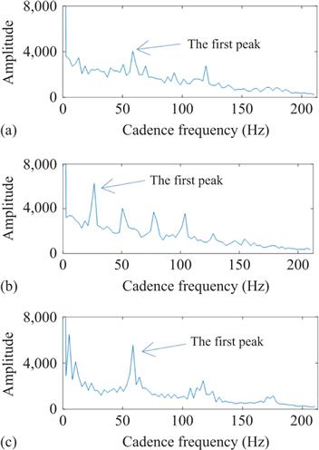
Figure 10.4 The CFSs of the small UAVs: (a) quadcopter, (b) helicopter and (c) hexacopter
10.2.2 Classification method and experimental results
The measured data are collected by using the radar and the UAVs introduced in Section 10.2.1. The time duration for each data recording is 6 s, and each measurement data is divided into 20 segments of 0.3 s. Such a segment is long enough to contain several periods of the radar signals reflected from the UAVs. To ensure the stability of data, the first and the last segments are abandoned, so there are 18 segments available per data record. The same data collection process is repeated ten times. Thus, the total number of the segments corresponding to each class of UAVs is (18 segments)×(10 repeats) = 180 (Figure 10.5).
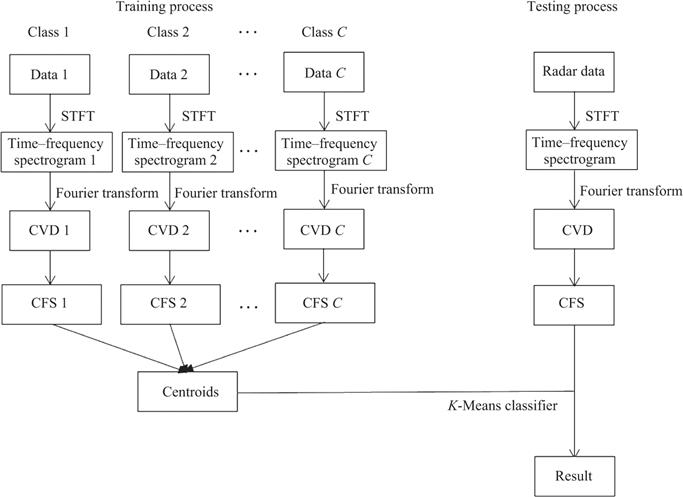
Figure 10.5 The scheme of the CFS-based method, where C is the number of classes of UAVs
In the training phase, the CFSs of those training data corresponding to each single class of UAV are extracted as described in Section 10.2.1 and fed into the K-means classifier [11] to obtain the clustered centroid in the feature space. Since three kinds of UAVs are used in the experiments, there are seven possible scenarios totally, as shown in Table 10.2. The feature centroids of the scenarios which contain more than one UAV are obtained by adding the fusion of the corresponding feature centroids of the single UAV scenarios.
Table 10.2 Possible scenarios
| Case | Target in scene |
|---|---|
| Scenario A | A helicopter |
| Scenario B | A hexacopter |
| Scenario C | A quadcopter |
| Scenario D | A helicopter and a quadcopter |
| Scenario E | A hexacopter and a quadcopter |
| Scenario F | A helicopter and a hexacopter |
| Scenario G | A helicopter, a hexacopter and a quadcopter |
In the testing phase, the CFS of the testing signal is extracted and compared with all the feature centroids to determine the classes of the UAVs existing in the observed scene. Here, 50% of the single-target data sets are used for training and the remaining data are used for testing. The recognition process is repeated 500 times with a random selection of the training/testing data and the average over all the trials is calculated to assess the recognition accuracy. The confusion matrix is given in Table 10.3.
Table 10.3 Confusion matrix
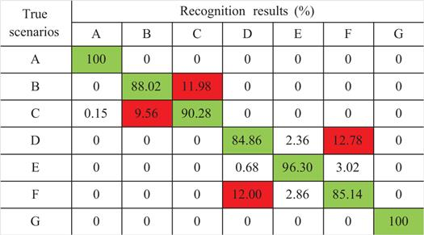
It is clear from Table 10.3 that (1) the average recognition accuracy for single UAVs (i.e., Scenarios A–C) is 92.77%, (2) the average recognition accuracy for two-UAV scenarios (i.e., Scenarios D–F) is 89.10%, (3) the recognition accuracy for three-UAV scenario (i.e., Scenario G) is 100% and (4) the average classification accuracy of all the scenarios is 92.23%.
From Table 10.3, one can observe a block diagonal pattern in the confusion matrix, while the obvious misclassification results are marked in red. The block pattern is caused by the difficulty in distinguishing UAVs within the same pattern (i.e., single- and dual-UAV scenarios). Both the quadcopter and the hexacopter have at least four rotors, which are the main components that produce MDSs. The superimposition and interaction of the various micro-Doppler scattering from the multiple rotors of multiple UAVs increase the difficulty of classification.
To further investigate the performance of the presented method, experiments under different proportions of training data, i.e., 10%, 20%, 30% and 50%, are carried out. Table 10.4 shows the minimum, maximum and average accuracy over 500 trials with randomly selected training data. It is observed that the classification accuracy of the presented method is high enough with even 20% training data, which indicates that the presented method is suitable for classification in the case of small data sets.
Table 10.4 UAV recognition accuracy (%)
| Training ratios | 20% training | 30% training | 40% training | 50% training |
|---|---|---|---|---|
| Min | 88.89 | 89.34 | 89.29 | 88.73 |
| Max | 94.25 | 94.21 | 94.71 | 95.24 |
| Average | 91.85 | 91.92 | 92.00 | 92.23 |
It is worth mentioning that the CFS-based method has low computational complexity. The average running time of the method, including training and testing, is only 0.128 s. The hardware platform is a laptop with an Intel® Core™ i5-3230M CPU inside, and the CPU clock frequency and the memory size are 2.6 GHz and 7.89 GB, respectively. The software platform is MATLAB® 2017a and the operation system is Windows 7. Thus, it is promising to achieve real-time processing of the CFS-based method on embedded computing platforms in practical applications.
10.3 Recognition of multiple UAVs via dictionary learning
In this section, an algorithm of the recognition of multiple small UAVs based on dictionary learning is presented. Being different from the CFS-based method, the aim of the dictionary learning-based method is to determine whether a specific kind of small UAV exists when there are multiple small UAVs in the observed air space.
10.3.1 Recognition method
The scheme of the method based on dictionary learning is illustrated in Figure 10.6. The presented method contains two sub-processes: (1) training and (2) testing. The training process is composed of two steps. First, the CVD of each training signal is computed for each UAV as formulated in (10.2). Second, the K-SVD algorithm [14] is applied to the CVDs to learn the dictionary of each class of small UAVs. Next, the learnt dictionaries of all classes are concatenated to form the overall recognition dictionary. In the testing process, the sparse representation of the CVD of the test signal is computed by using the OMP algorithm [15] with the learnt recognition dictionary. Subsequently, the  -norm of several segments of the sparse solution is compared with a threshold to determine the presence or absence of each class of UAVs.
-norm of several segments of the sparse solution is compared with a threshold to determine the presence or absence of each class of UAVs.
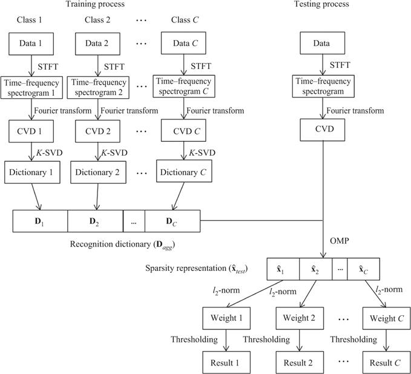
Figure 10.6 The scheme of the dictionary learning-based method, where C is the number of classes of UAVs
The data set is divided into three parts: training, testing and validating. The validating set is used for determining the threshold in the testing process. It is worth emphasizing that the training set only consists of radar echoes reflected from every single class of small UAVs.
10.3.1.1 Training phase
In the training phase, the CVDs of the training data are extracted as described in Section 10.2.1. Then, the two-dimensional CVD matrices  are reshaped into one-dimensional vectors
are reshaped into one-dimensional vectors  by stacking the columns of
by stacking the columns of  one underneath the other in sequence, i.e.,
one underneath the other in sequence, i.e.,
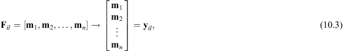
where
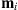
is the ith column vector of the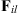
. Assume that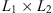
matrix. As a result,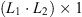
vector.Next, the features are extracted from the CVDs via dictionary learning. Compared with classical feature extraction methods such as empirical feature selection and principle component analysis, sparse representations are more representative and more discriminative with lower dimensionality [16]. Moreover, existing studies [17–19] have shown that compared with traditional sparsity coding methods with predesigned dictionaries, dictionary learning can dramatically improve the performance of sparse representation thanks to its capability of adaptively adjusting the dictionary based on the training data set. Dictionary learning aims to learn a set of atoms so that a given signal can be accurately approximated by a sparse linear combination of atoms and has produced promising results in the field of image processing [20–22]. In what follows, a typical algorithm of dictionary learning, K-SVD, [14] is applied to CVDs for feature extraction.
The linear decomposition of CVD of the ith target class
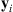
can be expressed as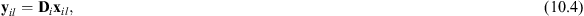
where  is an measurement vector,
is an measurement vector,
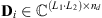
is the dictionary matrix with normalised columns, and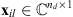
is a sparse vector. Assume the sparsity of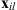
is K, i.e., the number of the nonzero coefficients in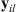
as columns of the matrix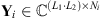
and similarly stacked the representations coefficient vector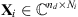
where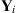
can be achieved by solving the following problem: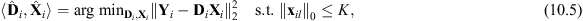
where and denote
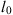
-norm and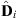
and a dictionary update stage that updates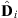
using the known representation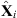
. In the sparse-coding stage, the optimal sparse representation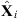
can be solved by the OMP algorithm [15]. In the dictionary update stage, the dictionaryAfter all the dictionaries are learnt via the K-SVD algorithm from the samples of each target class, the dictionaries from all the classes are combined together to form the recognition dictionary
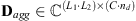
: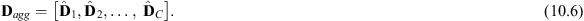
The recognition dictionary is utilized to realize signal decomposition in the testing process.
10.3.1.2 Testing phase
Assume that
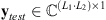
is the CVD vector of the testing data, generated from the two-dimensional CVD matrix after stacking the columns one underneath the other in sequence.Since the CVD is a linear transform of the radar echo, the CVD vector
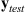
can be viewed as the sum of the CVD vectors corresponding to all the small UAV. In this way, the problem of recognition of multiple small UAVs is converted into the problem of signal decomposition. Assume that each target signal lies in its own subspace class and all the subspace classes are non-overlapping. As a result, the dictionaries learnt from different classes are discriminative. Since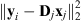
reaches the minimum value when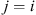
. The sparse representation of the aggregation signal can be obtained by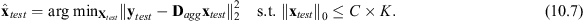
In this chapter, the OMP algorithm [15] is used to solve (10.7).
As the recognition dictionary
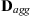
is composed of C dictionaries learnt from different target classes, the sparse solution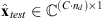
can be separated into C parts, i.e.,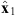
,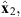
…, corresponding to the different target classes:Next, thresholding is applied to the sparse solution . That is, the target from the ith class is declared as present, if the strength exceeds the learnt threshold (). The threshold is designed as follows.
The testing data set can be divided into two parts, i.e., data set I that contains the ith type of UAV and data set II in which the ith type of UAV does not exist. We first define the rate of correct recognition for the  th target class on data set I and the rate of incorrect recognition with respect to the
th target class on data set I and the rate of incorrect recognition with respect to the  th target class on data set II as
th target class on data set II as
where
and are the number of samples in data set I and data set II, respectively, is the  th signal part in the th testing signal segments, i = 1, 2, 3, …, C and j = 1, 2, 3, …, .
th signal part in the th testing signal segments, i = 1, 2, 3, …, C and j = 1, 2, 3, …, .
The threshold is determined by solving the following problem with the validating data set:
The problem in (10.12) can be solved by searching algorithms [23,24].
10.3.2 Experimental results
The measured data are collected by using the radar and the UAVs introduced in Section 10.2.1. The measurement for each target class is repeated ten times with a duration of 6 s. Each measurement data is divided into 20 segments with the length of 0.3 s, which is long enough to contain several periods of oscillation of the reflected echo. Therefore, the number of signal segments of each scenario for training and testing is 10×6 s/0.3 s = 200.
In order to formulate the best sparse representation that is suitable for CVDs of small UAVs, the K-SVD algorithm is utilised to obtain the recognition dictionary during the experiment. Regarding the initialization of dictionary, there are three kinds of approaches [25], i.e., assigning the dictionary randomly, setting it to some randomly chosen training data points or running an initial clustering on the training data (such as discrete cosine transformation (DCT) and discrete wavelet transformation). In practice, a large quantity of training data are required for the first two kinds of methods, which is difficult to be satisfied in radar data sets of UAVs. The DCT dictionary has less limitation on the data set size and has produced satisfactory results in many existing studies [14,26]. Therefore, here we adopt the DCT dictionary for initializing the dictionary.
10.3.2.1 Recognition performance against multiple small UAVs
The objective of the dictionary learning-based method is to determine if there is a specific kind of target exists in the test scenario. Reference [27] proposes an approach for the recognition of different human behaviour types, in which the training data set is single-target data and testing data set contains multiple-target data. Here, we adopt a similar data set structure in this chapter.
In the experiments, the training data are composed of half of the measured data for each of the single-target case and 5% of the data are used as the validation data set, which is used for the determination of the threshold by solving (10.12). All the remaining single-target data and multi-target data are used for testing. The sparsity K is set to be 10, while the window size of STFT is set to be 4 ms. The recognition accuracy is obtained by averaging over 50 trials with randomly selected training data and validation data. The recognition accuracies for the scenarios of single, two and three small UAVs are presented in Table 10.5.
Table 10.5 Recognition result yielded by the presented method
Here, we take Scenario D in Table 10.5 (i.e., the fourth row in Table 10.5) as an example, where the testing scene contains a helicopter and a quadcopter. The value in the fourth row and the first column (91.24%) is calculated according to (10.9), which represents the correct recognition rate of the helicopter. It means that the accuracy of the presented method in determining whether a helicopter exists in Scenario D is 91.24%. Similarly, the value in the fourth row and the third column (99.64%), which is also calculated according to (10.9), represents the accuracy of the presented method in determining whether a quadcopter exists. On the contrast, the value in the fourth row and the second column (7.20%), which is calculated by following (10.10), stands for the false alarm rate of hexacopter in Scenario D. This indicates that a small part of the sparse coefficients corresponding to the hexacopter also exceeds the decision threshold.
It is clear from Table 10.5 that (1) the rate of correct recognition on average for single-UAV scenarios (i.e., Scenarios A–C) achieves 98.19%, (2) the rate of correct recognition on average for two-UAV scenarios (i.e., Scenarios D–F) is 90.20%, (3) the rate of correct recognition on average for three-UAV scenario (i.e., Scenario G) is 88.35%, and (4) the average rate of correct recognition for all the scenarios is 93.38%.
The recognition performance of the method proposed in [27] is also provided for comparison. The method proposed in [27], called the spectrogram-based method, recognises target classes by distinguishing the components of the testing signal using the dictionaries learnt directly from the time–frequency spectrogram. The proportions of training data are also set to be half the measured data for each single small UAV. The resulting recognition accuracies are shown in Table 10.6. The rate of correct recognition of the spectrogram-based method is 86.25% on average with the rate of incorrect recognition of 5.32%. It is clear from Tables 10.5 and 10.6 that the presented method obtains higher recognition accuracy.
Table 10.6 Recognition result yielded by the method in [27]
10.3.2.2 Recognition performance with different sizes of the training data sets
In this experiment, the performance of the dictionary learning-based method is analysed with different sizes of the training data sets. The presented method is compared with the spectrogram-based method in terms of the recognition performance. The proportions of training data vary from 10% to 70% with a step size of 20%, and 5% of the data set is used for the determination of threshold. The sparsity is set to be 10 for each dictionary. The recognition performances are obtained by averaging over 50 trials with randomly selected training data. The boxplot and averaged value of resulting rates of correct and incorrect recognition are shown in Figure 10.7.
Figure 10.7 Recognition performance yielded by the presented method and the spectrogram-based method under different sizes of training sets: (a) rate of correct recognition and (b) rate of incorrect recognition
The presented method and the spectrogram-based method have comparable incorrect recognition rates as shown in Figure 10.7(b). Moreover, it is clear from Figure 10.7(a) that the presented method consistently outperforms the spectrogram-based method in terms of the correct recognition for different sizes of training data sets with higher mean, median, first quartile and third quartile values. In addition, the dispersion levels provided by the presented method are lower than that of the spectrogram-based method, which means the presented method is more stable for different data sets. When the proportion of the training data is 10%, the presented method still achieves satisfactory recognition performance with a correct recognition rate of 85%. When the proportion of training data reaches 70%, the rate of correct recognition of the presented method achieves 94% on average.
10.3.2.3 Recognition performance with different dictionary scales
In this subsection, we evaluate the performance of the presented method with different dictionary scales. The scale of the dictionary varies from 500 to 2,000 with a step size of 500. The sparsity is set to be 10, while the window size of STFT is set to be 4 ms. The proportion of the training set is 50%. The recognition performances are averaged over 50 trials with randomly selected training data. The experimental results are demonstrated in Table 10.7.
Table 10.7 Rate of correct recognition yielded by the presented method under different scales of the dictionary
| Dictionary scale | 500 | 1,000 | 1,500 | 2,000 |
| Rate of correct recognition (%) | 92.15 | 93.50 | 93.38 | 93.85 |
It can be seen from Table 10.7 that the recognition performance of the presented method changes slightly when the scale of the dictionary is larger than 1,000. This means the presented method is not sensitive to the dictionary scale when it is large enough. Based on the trade-off between the recognition accuracy and the computation complexity, the scales of the dictionary can be selected in the range from 1,000 to 1,500.
10.3.2.4 Recognition performance with different sizes of sparsity
In this experiment, we evaluate the presented method with different values of sparsity K. The performance of the presented method is compared with that of the spectrogram-based method. The sparsity K varies from 1 to 19. The scale of the dictionary is set to 1,500, while the window size of STFT is set to be 4 ms. The proportion of the training set is 50%. The recognition performances are averaged over 50 trials with randomly selected training data. The resulting rates of correct recognition are shown in Figure 10.8.
Figure 10.8 Rate of correct recognition yielded by the dictionary learning-based method and the method in [27] versus different values of sparsity K (a) on average and (b) on boxplot
Figure 10.8(a) shows the recognition performance of the presented method and the spectrogram-based method with different sparsity values while Figure 10.8(b) is the boxplot of the results. It is clear from Figure 10.8(a) that the rate of correct recognition of the presented method increases as the sparsity K increases when K<10. The reason is that more features are extracted as the sparsity K increases. The rate of correct recognition tends to be stable when . This means that no more useful features can be extracted by setting larger value of K. Meanwhile, a larger value of the sparsity K will lead to more computational burden. Considering the trade-off between the computation complexity and the recognition accuracy, the sparsity K can be selected in the range from 10 to 13. In order to more exactly determine the value of sparsity K, the training scheme method proposed in [28] can be used. That is, the proposed method with all the possible sparsity candidates is evaluated and the proper sparsity corresponding to the best performance is selected.
In addition, it is obvious from Figure 10.8(b) that the presented method consistently outperforms the spectrogram-based method for different sparsity values with higher mean, median, first quartile and third quartile values. Furthermore, the box sizes of the presented method are smaller than that of the spectrogram-based method, which means the dispersion levels of the presented method are lower than those of the spectrogram-based method.
10.3.2.5 Recognition performance with different window sizes
In this subsection, the performance of the presented method versus the window size of the STFT is investigated. The window size varies from 2 to 8 ms with a step size of 2 ms. The sparsity K is set to 10. The recognition accuracies obtained by the presented method are illustrated in Figure 10.9, where 50% and 5% of the data set are used for training and validating, respectively.
Figure 10.9 Rate of correct recognition yielded by the presented method and the spectrogram-based method in [27] versus different window sizes
It can be seen from Figure 10.9 that the presented method achieves better accuracy when the window size is in the interval of 4 and 6 ms. The performance of the presented method declines when the window size is less than 4 ms or larger than 6 ms, this is because the frequency resolution or the time resolution of the time–frequency spectrogram are poor when the window size is too small or too large, respectively [21]. In addition, it is clear that the presented method consistently outperforms the spectrogram-based method for different window sizes with lower dispersion levels.
10.3.2.6 Recognition performance with different noise levels
In this subsection, the presented method is evaluated under different levels of additive white Gaussian noise (AWGN). The signals received by the radar are mixed with simulated AWGN according to the following expression:
where represents the received signal, represents the -norm of  , SNR is the approximate signal-to-noise ratio of the AWGN and the received signal, and is the AWGN with zero mean and unit variance. It is worth emphasizing that there may be a small gap between SNR and the real SNR value of the mixed signal , because the received signal y also contains noise components.
, SNR is the approximate signal-to-noise ratio of the AWGN and the received signal, and is the AWGN with zero mean and unit variance. It is worth emphasizing that there may be a small gap between SNR and the real SNR value of the mixed signal , because the received signal y also contains noise components.
In the experiments, the value of SNR varies from 0 to 20 dB with a step of 5 dB. Under each value of SNR, the recognition accuracies obtained by each method are measured by averaging over 50 trials. Here, the sparsity K is set to be 10, and the length of the window is set to be 4 ms. The proportion of the training set is 50%. It can be seen that the recognition accuracy obtained by the presented method is higher than 80% when the value of SNR is greater than 0 dB, as shown in Figure 10.10. Moreover, the presented method outperforms the spectrogram-based method under moderate noise with higher mean, median, first quartile and third quartile values.
Figure 10.10 Rate of correct recognition yielded by the presented method and the spectrogram-based method in [27] under different levels of AWGN
10.3.2.7 Analysis about the time consumption
In this subsection, the computational time of the dictionary learning-based method is evaluated.
The hardware platform is a server with an Intel Xeon® E5-2640 CPU inside, and the CPU clock frequency and the memory size are 2.40 GHz and 128 GB, respectively. The software platform is MATLAB 2018b and the operation system is Windows Server 2016 Standard. In realistic applications, the recognition of UAVs needs to be real-time processing. Considering that the training process can be accomplished offline, the bottleneck of real-time processing is the time consumption for testing. For each method, the running time for testing is measured by averaging over 100 trials. The results of running time are presented in Figure 10.11, where the presented method has lower time consumption under different sparsity levels. It is obvious that the time consumption increases linearly as the sparsity rises. The reason is that the number of inner iterations of OMP algorithm performs linearly with the sparsity level. Since the running time for recognizing one sample by the presented method with MATLAB is only 0.28 s when the sparsity is set to be 10, it is promising to achieve real-time processing with optimised code on embedded computing platforms in practical applications.
Figure 10.11 The time consumption of the presented method and the spectrogram-based method as a function of different sizes of sparsity
10.4 Conclusion
In this chapter, the problem of recognition of multiple UAVs with a radar sensor is studied. To some extent, this problem can be solved by spatial separation with high range resolution, which requires a large radar bandwidth and accordingly high hardware cost.
In order to recognise multiple UAVs with lower hardware cost, two algorithms for radar recognition of multiple UAVs with CW radar system are presented. In the first algorithm, the CFS is presented as a kind of low-dimensional features to realise the detection of multiple UAVs. CFS gives a general characteristic about the shape, size and variation tendency of CVD, which is independent of the time shift of radar echo and makes the recognition of small UAVs more robust. The experimental results on measured data demonstrate that the presented method is capable of dealing with multiple UAVs with high classification accuracy and low computational complexity. The second algorithm is based on dictionary learning, which aims to determine the presence of a specific type of small UAV. The dictionaries learnt by the K-SVD algorithm are combined together to determine the existence of the specific type of UAVs and accordingly the problem of recognition of multiple small UAVs is converted into the problem of signal decomposition. Experiments on real radar data have demonstrated the effectiveness of the dictionary learning-based algorithm.
The contents reported in this chapter are heuristic with several kinds of small UAVs. It is worth performing more experiments with more types of UAVs and a larger number of UAVs and evaluating the presented methods. When the data set is large enough, the features suggested in this chapter may be combined with artificial intelligence algorithms to further improve the recognition accuracy. Furthermore, the information of the UAVs in the time-range-Doppler domain could be exploited to improve the performance of recognition of UAV swarms.
References
[1] Ritchie, M., Fioranelli, F., and Borrion, H.: ‘Micro UAV crime prevention: can we help Princess Leia?’, Crime Prevention in the 21st Century: Insightful Approaches for Crime Prevention Initiatives, B. LeClerc and E.U. Savona, Eds. New York, NY, USA: Springer; 2017, pp. 359–376.
[2] Ritchie, M., Fioranelli, F., and Borrion, H.: ‘Multistatic micro-Doppler radar feature extraction for classification of unloaded/loaded micro-drones’, IET Radar Sonar Navig, 2017, 11, (1), pp. 116–124.
[3] Zhang, P., Yang, L., Chen, G., et al.: ‘Classification of drones based on micro-Doppler signatures with dual-band radar sensors’, 2017 Progress in Electromagnetics Research Symp., Singapore, Singapore, November 2017.
[4] Zhang, P., Li, G., Huo, C., and Yin, H.: ‘Exploitation of multipath micro-Doppler signatures for drone classification’, IET Radar Sonar Navigation, 2020, 14, (4), pp. 586–592.
[5] Oh, B.-S., Guo, X., Wan, F., et al.: ‘Micro-Doppler Mini-UAV classification using empirical-mode decomposition features’, IEEE Geosci Remote Sens Lett, 2018, 15, (2), pp. 227–231.
[6] Ritchie, M., Fioranelli, F., Griffiths, H., et al.: ‘Micro-drone RCS analysis’, IEEE Radar Conf., Johannesburg, South Africa, October 2015.
[7] Clemente, C., Balleri, A., Woodbridge, K., et al.: ‘Developments in target micro-Doppler signatures analysis: radar imaging, ultrasound and through-the-wall-radar’, EURASIP J Adv Signal Process, 2013, 47, (1), pp. 1–18.
[8] Fioranelli, F., Ritchie, M., and Griffiths, H.: ‘Classification of unarmed/armed personnel using the NetRAD multistatic radar for micro-Doppler and singular value decomposition features’, IEEE Geosci Remote Sens Lett, 2016, 13, (1), pp. 8–12.
[9] Zhou, Z., Zhang, C., Xu, C., et al.: ‘Energy-efficient industrial internet of UAVs for power line inspection in smart grid’, IEEE Trans Ind Inf, 2018, 14, (6), pp. 2705–2714.
[10] Shi, X., Yang, C., Xie, W., et al.: ‘Anti-drone system with multiple surveillance technologies: architecture, implementation, and challenges’, IEEE Commun Mag, 2018, 56, (4), pp. 68–74.
[11] Zhang, W. and Li, G.: ‘Detection of multiple micro-drones via cadence velocity diagram analysis’, Electron Lett, 2018, 54, (7), pp. 441–443.
[12] Zhang, W., Li, G., and Baker, C.: ‘Radar recognition of multiple micro-drones based on their micro-Doppler signatures via dictionary learning’, IET Radar Sonar Navig, 2020, 14, (9), pp. 1310–1318.
[13] Wang, Y., Feng, C., and Xu, D.: ‘Micro-Doppler separation for target with rotating parts based on wavelet decomposition,’ CIE International Conference on Radar, October 2016.
[14] Aharon, M., Elad, M., and Bruckstein, A.: ‘K-SVD: an algorithm for designing overcomplete dictionaries for sparse representation’, IEEE Trans Signal Process, 2006, 54, (11), pp. 4311–4322.
[15] Tropp, J.A. and Gilbert, A.C.: ‘Signal recovery from random measurements via orthogonal matching pursuit’, IEEE Trans Inf Theory, 2007, 53, (12), pp. 4655–4666.
[16] Wu, L., Wang, Y., and Pan, S.: ‘Exploiting attribute correlations: a novel trace lasso-based weakly supervised dictionary learning method’, IEEE Trans Cybern, 2017, 47, (12), pp. 4497–4508.
[17] Liu, L., Shao, L., Li, X., and Lu, K.: ‘Learning spatio-temporal representations for action recognition: a genetic programming approach’, IEEE Trans Cybern, 2016, 46, (1), pp. 158–170.
[18] Liu, L., Yu, M., and Shao, L.: ‘Unsupervised local feature hashing for image similarity search’, IEEE Trans Cybern, 2016, 46, (11), pp. 2548–2558.
[19] Patel, V.M., Qiu, Q., and Chellappa, R.: ‘Dictionaries for image-based recognition’, Information Theory and Applications Workshop, San Diego, CA, USA, February 2013.
[20] Wang, J., Yang, J., Yu, K., et al.: ‘Locality-constrained linear coding for image classification’, IEEE Computer Society Conference on Computer Vision and Pattern Recognition, San Francisco, CA, USA, June 2010.
[21] Li, G., Zhang, R., Ritchie, M., and Griffiths, H.: ‘Sparsity-driven micro-Doppler feature extraction for dynamic hand gesture recognition’, IEEE Trans Aerosp Electron Syst, 2018, 54, (2), pp. 655–665.
[22] Yang, M., Zhang, L., Feng, X., and Zhang, D.: ‘Fisher discrimination dictionary learning for sparse representation’, International Conference on Computer Vision, Barcelona, Spain, November 2011.
[23] LaValle, S.M., Branicky, M.S., and Lindemann, S.R.: ‘On the relationship between classical grid search and probabilistic roadmaps’, Int J Rob Res, 2004, 23, (7–8), pp. 673–692.
[24] Wu, S. and Manber, U.: ‘A fast algorithm for multi-pattern searching’, Technical Report TR-94-17, Department of Computer Science, University of Arizona, 1994.
[25] Zhang, Q. and Li, B.: Dictionary Learning in Visual Computing, San Rafael, CA, USA: Morgan & Claypool, 2015.
[26] Song, L. and Peng, J.: ‘Dictionary learning research based on sparse representation’, IEEE Conference on Computer Science and Service System, Nanjing, China, August 2012.
[27] Vishwakarma, S. and Ram, S.S.: ‘Detection of multiple movers based on single channel source separation of their micro-Dopplers’, IEEE Trans Aerosp Electron Syst, 2018, 54, (1), pp. 159–169.
[28] Molchanov, P.: Radar Target Classification by Micro-Doppler Contributions, Tampere, Finland: Tampere University of Technology, 2014.